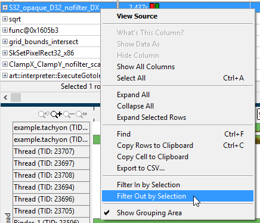
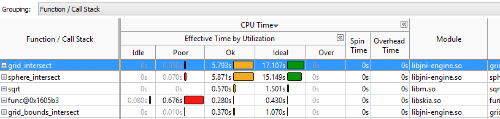
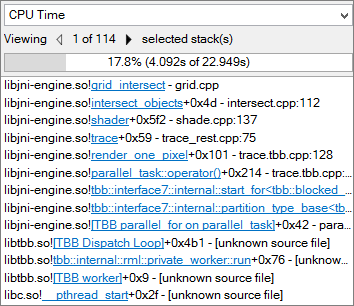
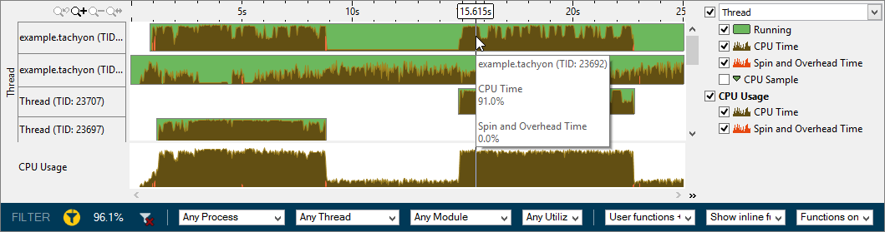

The Android* application
tachyon runs on the Android device, rendering the 3-D
fractal image in cycles. When
tachyon exits, the Intel® VTune™ Amplifier finalizes the
results and opens the
Hotspots by CPU Usage viewpoint where each window or pane is
configured to display code regions that consumed a lot of CPU time. To
interpret the data on the sample code performance, do the following:
The Android* application
tachyon runs on the Android device, rendering the 3-D
fractal image in cycles. When
tachyon exits, the Intel® VTune™ Amplifier finalizes the
results and opens the
Hotspots by CPU Usage viewpoint where each window or pane is
configured to display code regions that consumed a lot of CPU time. To
interpret the data on the sample code performance, do the following:
Note
The screenshots and execution time data provided in this tutorial are created on a system with four CPU cores with an Intel Atom™ processor running Android version 5.1.1 (Lollipop). Your data may vary depending on the number and type of CPU cores on your Android device.
Understand the Basic Hotspots Metrics
Start analysis with the
Summary window. Hover over the question mark icons
 to read the pop-up help and better understand what each
performance metric means.
to read the pop-up help and better understand what each
performance metric means.

The CPU Time for the tachyon sample application is equal to 62.080 seconds. It is the sum of CPU Time for all application threads. Total Thread Count is 19, so multiple threads ran during data collection.
The Top Hotspots section provides data on the most time consuming functions (hotspot functions) sorted by CPU Time spent on their execution.
The grid_intersect function, which took 22.949 seconds to execute, shows up at the top of the list as the hottest function.
The second hottest function is sphere_intersect, which took 21.090 seconds to execute.
The S32_opaque_D32_nofilter_DX function is part of the underlying Android operating system and is not relevant to the tachyon sample application analysis. When testing your own application, watch for functions that may be system processes running behind the scenes that may impact performance.
The funct@0x1605b3 function appears with a pseudo name because the source file was not provided during the analysis target setup.
The [Others] entry at the bottom shows the sum of CPU time for all functions not listed in the table, at 12.067 seconds.
The CPU Usage Histogram represents the elapsed time and usage level for the available logical processors.

The tachyon sample application ran on one, three, or four logical CPUs most of the time. If you hover over each bar, a tooltip appears listing the total amount of time spent with each CPU grouping. You can reset the Poor, Ok, and Ideal values using the slider tabs below the histogram. For example, you may consider running three or four logical CPUs to be ideal usage.
To understand which functions caused the device to spend time in Poor utilization, explore the Bottom-up pane.
Analyze the Most Time-consuming Functions and CPU Usage
Click the Bottom-up tab. Change the grouping level using the Grouping drop-down menu at the top of the grid to Function / Call Stack.
Examine the Effective Time by Utilization column. Functions that took the most CPU time to execute are listed on top.
The
grid_intersect function took the maximum time to
execute, 22.949 seconds, and had either OK or Ideal CPU utilization. The
S32_opaque_D32_nofilter_DX function had primarily
Ideal or Poor CPU utilization (red
 bars). Poor
CPU utilization means that the processor cores were not well utilized most of
the time spent on executing this function.
bars). Poor
CPU utilization means that the processor cores were not well utilized most of
the time spent on executing this function.
Note
You may change the stack representation to a "tree" style by
clicking the
 View stacks as a tree button located in the upper right of the
menu.
View stacks as a tree button located in the upper right of the
menu.

Since the S32_opaque_D32_nofilter_DX function is not related to the tachyon sample application, the data can be filtered to remove this function. Right-click on the function name in the grid and select Filter Out by Selection. The window refreshes and the S32_opaque_D32_nofilter_DX function is removed from the grid and timeline.

To see the detailed CPU usage information per function, use the
 Expand button
in the
Bottom-up
pane to expand the
Effective Time by Utilization column.
Expand button
in the
Bottom-up
pane to expand the
Effective Time by Utilization column.

Select the grid_intersect function in the grid and explore the data provided in the pane on the right. The Call Stack pane displays full stack data for each hotspot function, enabling you to navigate between function call stacks and understand the impact of each stack to the function CPU time. The stack functions in the Call Stack pane are represented in the following format.
<module>!<function> - <source code file>

For the sample application, the hottest function grid_intersect is located in the libjni-engine module in the grid.cpp source file. You can double click the module to view the source code.
Analyze Timeline Data
To get detailed information on the thread performance, explore the Timeline pane.

The threads area shows the distribution of CPU time utilization per thread. Hover over a bar to see the CPU time utilization in percent for this thread at each moment of time. Green zones the times threads are active. The time that has passed since the application was launched is displayed at the top of the timeline.
The CPU Usage area shows the distribution of CPU time utilization for the whole application. Hover over a bar to see the application-level CPU time utilization in percent at each moment of time.
The application caused a spike in CPU activity at regular intervals during collection. Click and drag to select an area of interest and select the Zoom In and Filter In by Selection action to view one of these areas in more detail. Use the Filter bar at the bottom of the window to explore data related to a certain process, thread, or module. In this example, only 96.1% of data is shown because the S32_opaque_D32_nofilter_DX was removed.